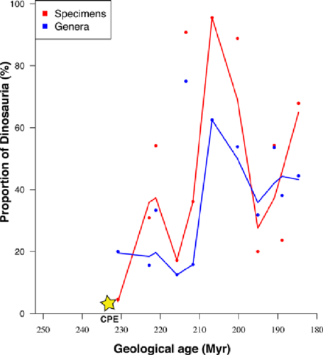

Chapter 8 Exercises
8.1 Introduction
These exercises are meant to provide practice of the course material presented in this eBook. There is no single good solution for them, but some are better than others. A good practice is also to try to solve the same exercise in several different ways.
Most of the *datasets referred to from within the exercises can be found in the Github repository with the URL https://github.com/MichielNoback/datasets. This is a direct link. You can download individual datasets from this page, or download the entire repository at once. To download, use the “clone or download” pull down button (green button). If you want to be a pro, use git to clone it…
The solutions to the exercises are in the next chapter of this eBook.
8.2 ggplot2
8.2.1 Global temperature
Maybe you have seen this picture of the world temperature over the past 120 years:

global_heatmap_s.png
The global temperature data are located in folder global_temperature (see the Data Repo).
There are two data series in file https://raw.githubusercontent.com/MichielNoback/datasets/master/global_temperature/annual.csv.
Study the readme file in the same folder to find out their nature.
8.2.1.1 Create a scatter-and-line-plot
Create a scattter-and-line graph of both series in a single plot. Annotate well with labels and title. Optionally, add a smoother without error boundaries.
8.2.1.2 Re-create the heatmap
You should try to reproduce the above picture by using the geom_tile() function. Hint: use scale_fill_gradient2(low = "blue", mid = "white", high = "red") and pass 1 as value for y in the mapping function..
8.2.1.3 Extra practice
As extra practice, you could try to answer these questions as well:
- what is the warmest year?
- what is the warmest year that both timelines agree upon?
- which was the coldest decade?
- what is the 30-year moving average of the temperature?
The is also a monthly temperature file. Many explorations can be carried out on that one as well.
8.2.2 Epilepsy drug trial
The epilepsy folder (see the Data Repo) contains two files, one of which -epilepsy.csv- is the actual datafile. The readme.md file describes the dataset and the columns. Read it carefully before proceeding.
8.2.2.1 Load the data
Load the data and be sure to check the correctness of data types in the columns. The period should be a factor. You can use a downloaded copy, but a direct link to the data file can also be used as argument to read.table():
https://raw.githubusercontent.com/MichielNoback/datasets/master/epilepsy/epilepsy.csv
8.2.2.2 Reorganize the data
Reorganize the data so that the dependent variable comes last and the useless entry variable is omitted. This order of variables is required:
"subject", "age", "base", "treatment", "period", "seizure.rate"
For better readability you should convert the dataframe into a tibble using as_tibble() (tibbles are dealt with in a later chapter: dplyr).
8.2.2.3 Create plots of seizure rates
First, create a boxplot of the seizure rates of both groups, split over both the period and the treatment. To support both of these data dimensions you will either have to use the color aesthetic, or the facet_wrap() function, like this + facet_wrap(. ~ treatment). I suggest you try them both.
Next, create the same basic plot as a jitter plot. You can use the facet_wrap(). Compare them and write down some pros and cons of both.
Investigate whether an overlay may improve the story this visualization tells, or can you come up with an even better graph?
8.2.2.4 A boxplot after correction
The base column is the base seizure rate of the subject in an 8-week window prior to the actual trial. To compare before and after you should create a new dataframe where the seizure.rate is summed for the 4 periods. Next, create a final boxplot of these corrected values.
8.2.2.5 Test for statistical significance
In the previous exercise you have determined the corrected seizure rates. Can you figure out a statistical test to see if the difference is significant?
8.2.2.6 Investigate age-dependency
Investigate whether there is an age-dependent effect in either the base seizure rate or the effect of the treatment.
8.2.3 The dinos
This exercise represents a review of many of basic R operations as well, besides ggplot2.
The dinos folder contains an Excel file called jgs2018049_si_001.xlsx. It contains supplementary data to a scientific publication with the title “The Carnian Pluvial Episode and the origin of dinosaurs” [Benton et al., Journal of the Geological Society 175(6) 2018].
One of the figures accompanying the paper is this one:

Figure 2.Proportions of early dinosaurs through the Triassic, showing the rapid rise in the late Carnian and early to middle Norian. Two metrics are shown, numbers of specimens and numbers of genera in 12 sampled faunas, in proportion to all tetrapods; the linking line is a moving average. Specimen counts perhaps exaggerate the trend when compared with generic counts, or at least both show different aspects of the same rise in ecological impact of the dinosaurs in the Late Triassic. (Based on data in supplementary material Table S1.)
You have to agree this is terrible! They even omitted the legend for CPE which is descried in the paper “Carnian Pluvial Episode (CPE), dated at 232 MYa”. And what the heck is a “moving average”?
Let’s explore and improve.
8.2.3.1 Export to csv
We’ll begin by exporting all three tabs to a textual format.
Open the excel file and select the tab “Contents”. You can see it is a “codebook” - it contains column names and descriptions for the two other tabs in the excel file. In the File menu, select Save As…. Next, give as name codebook.csv and for File Format, select CSV UTF-8 (Comma-delimited) (.csv). You’ll get a warning -read it!- but select OK.
Next, select tab “Skeletons” and repeat to generate skeletons.csv and “Footprints” to generate footprints.csv.
Close the Excel file without saving changes to it. We’ll continue with the csv files.
Note: R has packages providing functionality to read from Excel, but this is outside the scope of this course, and installing them is often a hassle.
8.2.3.2 Clean up and load codebook.csv
Have a look at the contents of codebook.csv in the editor. It is not yet suitable for loading into R. Write down the number of lines describing column headers for the skeletons and the number for footprints. Next, delete the lines that ar not really codebook entries.
- Load the resulting file -as character data only!- and assign it to variable
codebook.
- Give the dataframe column names:
variableanddescription. - Remove the leading space of the second column
- Add a column called
dataset: a factor with the valueskeletonorfootprint, depending on the file that is referred to.
8.2.3.3 Write a utility function
Write a utility function that returns a text label to be used in plotting when given a dataset name and a column name. The label should come from the codebook description variable of course. The dataset parameter should default to skeleton. For example, these calls:
get_description('Dinosaur_gen', 'skeleton')
##same as
get_description('Dinosaur_gen') should both return Number of genera of Dinosauria.
As extra challenge you could implement some error checking to make the function more robust.
8.2.3.4 Load skeleton data
Load the data in the skeletons.csv file and assign it to variable skeleton. Make sure your data columns have the right type and that you did not overlook NA value or decimal encodings.
8.2.3.5 Plot species versus time
As a first exploration of the data, create a scatterplot of Total_spec as a function of Midpoint (the midpoint of the archaeological epoch) and have the points colored by Epoch. You should use ggplot2 of course.
There is an outlier flattening the picture quite a lot. Can you think of a strategy to make the picture clearer?
Another problem is that the x-axis scale is from recent to ancient and this should be reversed.
Finally, add a smoother (loess regression) for the entire dataset (not split over the Epochs!) and annotate the plot with nice axis labels, preferably using your previously created utility function. NB: it may be a good idea to tweek the descriptions in the codebook a little bit.
Note that for “Million Years Ago” you can use the abbreviations “MYA” or “Ma” (Mega annum).
8.2.3.6 Reproducing the publication figure
Reproduce the figure from the introduction of this section, but using ggplot2 instead of base R. This requires some preprocessing steps, especially with the use of pivot_longer().
Part 1
You will have to calculate the proportions of Dinosauria (Dinosaur_gen) relative to the total of all “tetrapod” groups (including Archosauromorph_gen, Dinosaur_gen, Synapsid_gen, Parareptile_gen, Temnospondyl_gen). You need this for Specimens (_spec) as well as Genera (_gen).
Part 2
Next, you should extract a single proportion for all Formations represented in a single Midpoint. I realise that this is not an entirely valid operation. Do you know why? Can you figure out how it was done for the erxisting publication plot?
I suggest you use the aggregate() function. You will need the Epoch and Stage of these as well for later aspects of plotting.
Part 3
Now you need to “flatten” the data using spread() or -preferably- pivot_longer().
Part 4
Finally you have the data to generate the plot itself, without the moving average.
Part 5 [challenge]
Add the moving average. A simple moving average (SMA) is the unweighted mean of the previous n data.
The paper does not say anythong about the “window” (n) used in the moving average, but looking at the original figure it is less that 10 MY wide. Actually, to be honest, I cannot identify the used algorithm by looking at the plot. Can you?
Just give it a shot and see how far you get.
8.2.3.7 Make a better figure
Next, try to make a plot that uses an alternative to the moving average used in the publication. Also, use background coloring (rectangles) to highlight the Epochs within the plot.
8.2.3.8 Use the size aesthetic
The “size” aesthetic can be used for indicating the absolute number of specimens/genera, repsectively. This adds an extra dimension of information to the plot.
8.3 tidyr and dplyr
8.3.1 Population numbers
8.3.2 Rubella and Measles
The rubella_measles_cases folder of the datasets repo contains